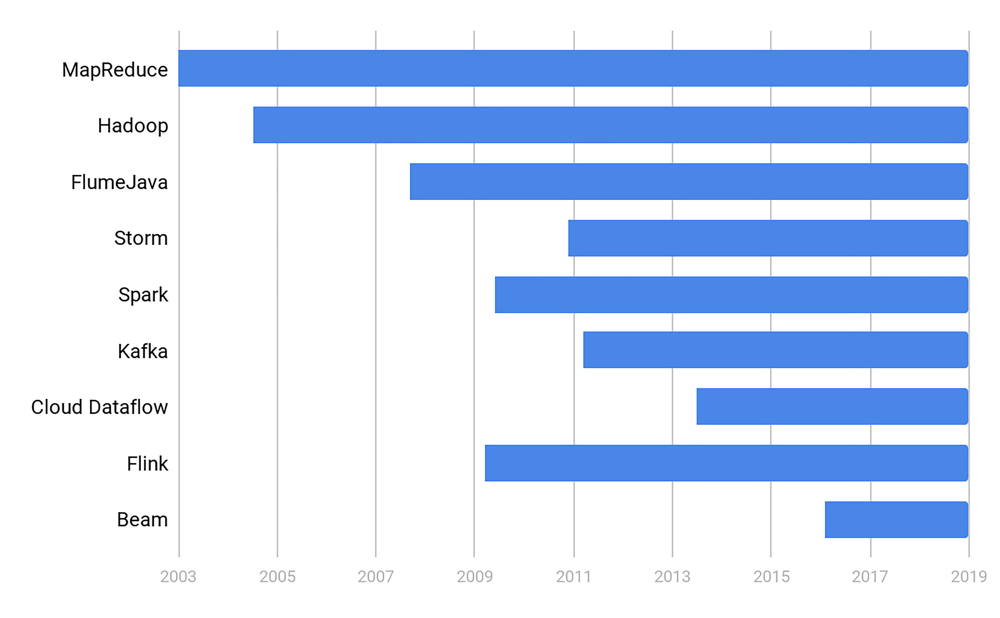
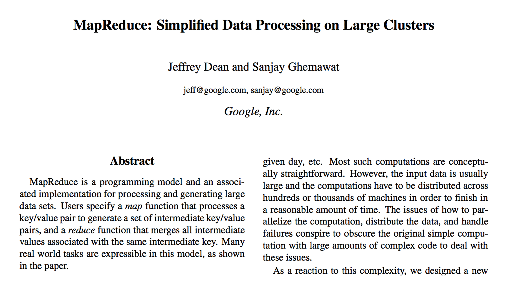
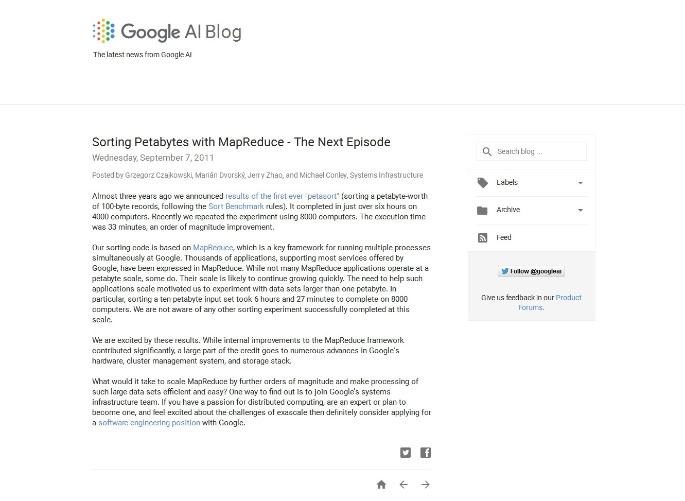
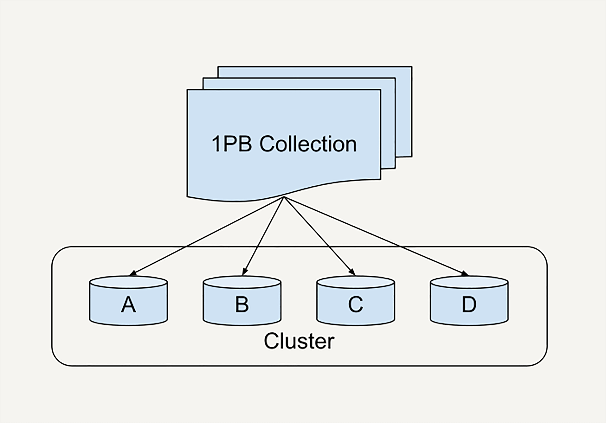
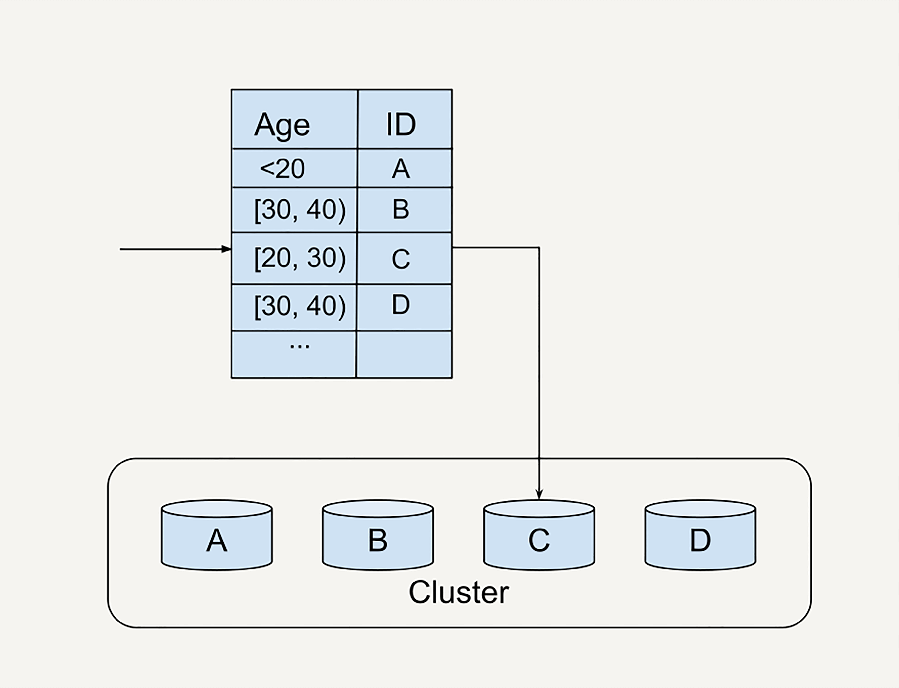
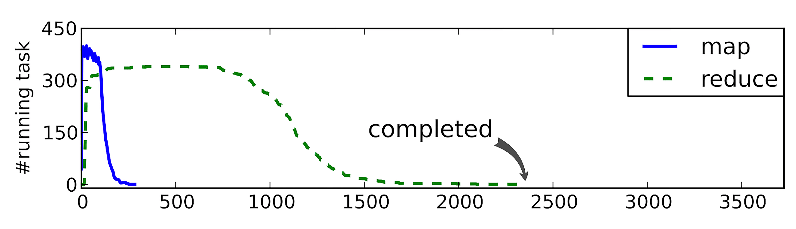

- 00 开篇词 从这里开始，带你走上硅谷一线系统架构师之路.md
- 01 为什么MapReduce会被硅谷一线公司淘汰？.md
- 02 MapReduce后谁主沉浮：怎样设计下一代数据处理技术？.md
- 03 大规模数据处理初体验：怎样实现大型电商热销榜？.md
- 04 分布式系统（上）：学会用服务等级协议SLA来评估你的系统.md
- 05 分布式系统（下）：架构师不得不知的三大指标.md
- 06 如何区分批处理还是流处理？.md
- 07 Workflow设计模式：让你在大规模数据世界中君临天下.md
- 08 发布_订阅模式：流处理架构中的瑞士军刀.md
- 09 CAP定理：三选二，架构师必须学会的取舍.md
- 10 Lambda架构：Twitter亿级实时数据分析架构背后的倚天剑.md
- 11 Kappa架构：利用Kafka锻造的屠龙刀.md
- 12 我们为什么需要Spark？.md
- 13 弹性分布式数据集：Spark大厦的地基（上）.md
- 14 弹性分布式数据集：Spark大厦的地基（下）.md
- 15 Spark SQL：Spark数据查询的利器.md
- 16 Spark Streaming：Spark的实时流计算API.md
- 17 Structured Streaming：如何用DataFrame API进行实时数据分析_.md
- 18 Word Count：从零开始运行你的第一个Spark应用.md
- 19 综合案例实战：处理加州房屋信息，构建线性回归模型.md
- 20 流处理案例实战：分析纽约市出租车载客信息.md
- 21 深入对比Spark与Flink：帮你系统设计两开花.md
- 22 Apache Beam的前世今生.md
- 23 站在Google的肩膀上学习Beam编程模型.md
- 24 PCollection：为什么Beam要如此抽象封装数据？.md
- 25 Transform：Beam数据转换操作的抽象方法.md
- 26 Pipeline：Beam如何抽象多步骤的数据流水线？.md
- 27 Pipeline IO Beam数据中转的设计模式.md
- 28 如何设计创建好一个Beam Pipeline？.md
- 29 如何测试Beam Pipeline？.md
- 30 Apache Beam实战冲刺：Beam如何run everywhere_.md
- 31 WordCount Beam Pipeline实战.md
- 32 Beam Window：打通流处理的任督二脉.md
- 33 横看成岭侧成峰：再战Streaming WordCount.md
- 34 Amazon热销榜Beam Pipeline实战.md
- 35 Facebook游戏实时流处理Beam Pipeline实战（上）.md
- 36 Facebook游戏实时流处理Beam Pipeline实战（下）.md
- 37 5G时代，如何处理超大规模物联网数据.md
- 38 大规模数据处理在深度学习中如何应用？.md
- 39 从SQL到Streaming SQL：突破静态数据查询的次元.md
- 40 大规模数据处理未来之路.md
- FAQ第一期 学习大规模数据处理需要什么基础？.md
- FAQ第三期 Apache Beam基础答疑.md
- FAQ第二期 Spark案例实战答疑.md
- 加油站 Practice makes perfect！.md
- 结束语 世间所有的相遇，都是久别重逢.md
01 为什么MapReduce会被硅谷一线公司淘汰？
你好，我是蔡元楠。
今天我要与你分享的主题是“为什么MapReduce会被硅谷一线公司淘汰”。
我有幸几次与来Google参观的同行进行交流，当谈起数据处理技术时，他们总是试图打探MapReduce方面的经验。
这一点让我颇感惊讶，因为在硅谷，早已没有人去谈论MapReduce了。
今天这一讲，我们就来聊聊为什么MapReduce会被硅谷一线公司淘汰。
我们先来沿着时间线看一下超大规模数据处理的重要技术以及它们产生的年代。

我认为可以把超大规模数据处理的技术发展分为三个阶段：石器时代，青铜时代，蒸汽机时代。
石器时代
我用“石器时代”来比喻MapReduce诞生之前的时期。
数据的大规模处理问题早已存在。早在2003年的时候，Google就已经面对大于600亿的搜索量。
但是数据的大规模处理技术还处在彷徨阶段。当时每个公司或者个人可能都有自己的一套工具处理数据。却没有提炼抽象出一个系统的方法。
青铜时代
2003年，MapReduce的诞生标志了超大规模数据处理的第一次革命，而开创这段青铜时代的就是下面这篇论文《MapReduce: Simplified Data Processing on Large Clusters》。

杰夫（Jeff Dean）和桑杰（Sanjay Ghemawat）从纷繁复杂的业务逻辑中，为我们抽象出了Map和Reduce这样足够通用的编程模型。后面的Hadoop仅仅是对于GFS、BigTable、MapReduce 的依葫芦画瓢，我这里不再赘述。
蒸汽机时代
到了2014年左右，Google内部已经几乎没人写新的MapReduce了。
2016年开始，Google在新员工的培训中把MapReduce替换成了内部称为FlumeJava（不要和Apache Flume混淆，是两个技术）的数据处理技术。
这标志着青铜时代的终结，同时也标志着蒸汽机时代的开始。
我跳过“铁器时代”之类的描述，是因为只有工业革命的概念才能解释从MapReduce进化到FlumeJava的划时代意义。
Google内部的FlumeJava和它后来的开源版本Apache Beam所引进的统一的编程模式，将在后面的章节中为你深入解析。
现在你可能有一个疑问 ：为什么MapReduce会被取代？今天我将重点为你解答。
高昂的维护成本
使用MapReduce，你需要严格地遵循分步的Map和Reduce步骤。当你构造更为复杂的处理架构时，往往需要协调多个Map和多个Reduce任务。
然而，每一步的MapReduce都有可能出错。
为了这些异常处理，很多人开始设计自己的协调系统（orchestration）。例如，做一个状态机（state machine）协调多个MapReduce，这大大增加了整个系统的复杂度。
如果你搜 “MapReduce orchestration” 这样的关键词，就会发现有很多书，整整一本都在写怎样协调MapReduce。
你可能会惊讶于MapReduce的复杂度。我也经常会看到一些把MapReduce说得过度简单的误导性文章。
例如，“把海量的××数据通过MapReduce导入大数据系统学习，就能产生××人工智能”。似乎写文的“专家”动动嘴就能点石成金。
而现实的MapReduce系统的复杂度是超过了“伪专家”的认知范围的。下面我来举个例子，告诉你MapReduce有多复杂。
想象一下这个情景，你的公司要预测美团的股价，其中一个重要特征是活跃在街头的美团外卖电动车数量，而你负责处理所有美团外卖电动车的图片。
在真实的商用环境下，为了解决这个问题，你可能至少需要10个MapReduce任务：

首先，我们需要搜集每日的外卖电动车图片。
数据的搜集往往不全部是公司独自完成，许多公司会选择部分外包或者众包。所以在数据搜集（Data collection）部分，你至少需要4个MapReduce任务：
数据导入（data ingestion）：用来把散落的照片（比如众包公司上传到网盘的照片）下载到你的存储系统。
数据统一化（data normalization）：用来把不同外包公司提供过来的各式各样的照片进行格式统一。
数据压缩（compression）：你需要在质量可接受的范围内保持最小的存储资源消耗 。
数据备份（backup）：大规模的数据处理系统我们都需要一定的数据冗余来降低风险。
仅仅是做完数据搜集这一步，离真正的业务应用还差得远。
真实的世界是如此不完美，我们需要一部分数据质量控制（quality control）流程，比如：
数据时间有效性验证 （date validation）：检测上传的图片是否是你想要的日期的。
照片对焦检测（focus detection）：你需要筛选掉那些因对焦不准而无法使用的照片。
最后才到你负责的重头戏——找到这些图片里的外卖电动车。而这一步因为人工的介入是最难控制时间的。你需要做4步：
数据标注问题上传（question uploading）：上传你的标注工具，让你的标注者开始工作。
标注结果下载（answer downloading）：抓取标注完的数据。
标注异议整合（adjudication）：标注异议经常发生，比如一个标注者认为是美团外卖电动车，另一个标注者认为是京东快递电动车。
标注结果结构化（structuralization）: 要让标注结果可用，你需要把可能非结构化的标注结果转化成你的存储系统接受的结构。
这里我不再深入每个MapReduce任务的技术细节，因为本章的重点仅仅是理解MapReduce的复杂度。
通过这个案例，我想要阐述的观点是，因为真实的商业MapReduce场景极端复杂，像上面这样10个子任务的MapReduce系统在硅谷一线公司司空见惯。
在应用过程中，每一个MapReduce任务都有可能出错，都需要重试和异常处理的机制。所以，协调这些子MapReduce的任务往往需要和业务逻辑紧密耦合的状态机。
这样过于复杂的维护让系统开发者苦不堪言。
时间性能“达不到”用户的期待
除了高昂的维护成本，MapReduce的时间性能也是个棘手的问题。
MapReduce是一套如此精巧复杂的系统，如果使用得当，它是青龙偃月刀，如果使用不当，它就是一堆废铁。不幸的是并不是每个人都是关羽。
在实际的工作中，不是每个人都对MapReduce细微的配置细节了如指掌。
在现实中，业务往往需求一个刚毕业的新手在3个月内上线一套数据处理系统，而他很可能从来没有用过MapReduce。这种情况下开发的系统是很难发挥好MapReduce的性能的。
你一定想问，MapReduce的性能优化配置究竟复杂在哪里呢？
我想Google500多页的MapReduce性能优化手册足够说明它的复杂度了。这里我举例讲讲MapReduce的分片（sharding）难题，希望能窥斑见豹，引发大家的思考。
Google曾经在2007年到2012年间做过一个对于1PB数据的大规模排序实验，来测试MapReduce的性能。
从2007年的排序时间12小时，到2012年的排序时间缩短至0.5小时。即使是Google，也花了5年的时间才不断优化了一个MapReduce流程的效率。
2011年，他们在Google Research的博客上公布了初步的成果。

其中有一个重要的发现，就是他们在MapReduce的性能配置上花了非常多的时间。包括了缓冲大小(buffer size），分片多少（number of shards），预抓取策略（prefetch），缓存大小（cache size）等等。
所谓的分片，是指把大规模的的数据分配给不同的机器/工人，流程如下图所示。

选择一个好的分片函数（sharding function）为何格外重要？让我们来看一个例子。
假如你在处理Facebook的所有用户数据，你选择了按照用户的年龄作为分片函数（sharding function）。我们来看看这时候会发生什么。
因为用户的年龄分布不均衡（假如在20~30这个年龄段的Facebook用户最多），导致我们在下图中worker C上分配到的任务远大于别的机器上的任务量。

这时候就会发生掉队者问题（stragglers）。别的机器都完成了Reduce阶段，只有worker C还在工作。
当然它也有改进方法。掉队者问题可以通过MapReduce的性能剖析（profiling）发现。 如下图所示，箭头处就是掉队的机器。

图片引用：Chen, Qi, Cheng Liu, and Zhen Xiao. “Improving MapReduce performance using smart speculative execution strategy.” IEEE Transactions on Computers 63.4 (2014): 954-967.
回到刚刚的Google大规模排序实验。
因为MapReduce的分片配置异常复杂，在2008年以后，Google改进了MapReduce的分片功能，引进了动态分片技术 (dynamic sharding），大大简化了使用者对于分片的手工调整。
在这之后，包括动态分片技术在内的各种崭新思想被逐渐引进，奠定了下一代大规模数据处理技术的雏型。
小结
这一讲中，我们分析了两个MapReduce之所以被硅谷一线公司淘汰的“致命伤”：高昂的维护成本和达不到用户期待的时间性能。
文中也提到了下一代数据处理技术雏型。这就是2008年左右在Google西雅图研发中心诞生的FlumeJava，它一举解决了上面MapReduce的短板。
另外，它还带来了一些别的优点：更好的可测试性；更好的可监控性；从1条数据到1亿条数据无缝扩展，不需要修改一行代码，等等。
在后面的章节中，我们将具体展开这几点，通过深入解析Apache Beam（FlumeJava的开源版本），揭开MapReduce继任者的神秘面纱。
思考题
如果你在Facebook负责处理例子中的用户数据，你会选择什么分片函数，来保证均匀分布的数据分片?
欢迎你把答案写在留言区，与我和其他同学一起探讨。
如果你觉得有所收获，也欢迎把文章分享给你的朋友。
© 2019 - 2023 Liangliang Lee. Powered by gin and hexo-theme-book.